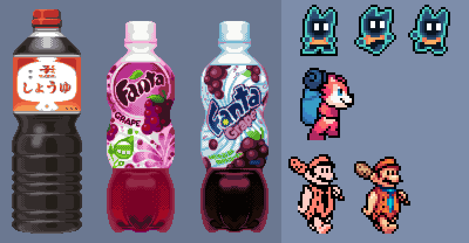
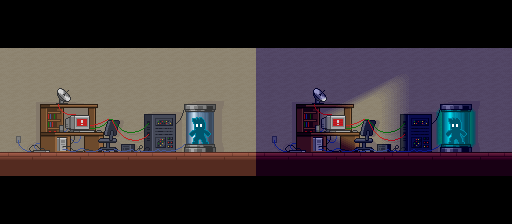
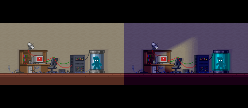

Hi I'm Nathan!
You may know me as MM102.
...Or you just don't know me, in which case, hello!
I consider myself to be a visual generalist (self credited) and coding hobbyist. My forte been doing pixel art and illustration since I was 9 years old. As well as having experience in animation, video editing, compositing, motion graphics, general 3D, and more.
I love to learn new skills and programs to build things for myself (to a fault admittedly). Obtaining new forms of creative control is extremely enjoyable. I even taught myself HTML, CSS and JS to format this website just how I like.
Here are some art programs I've dabbled in over the years:
- Aseprite
- YY-CHR
- Clip Studio Paint
- Blender
- Davinci Resolve
- Adobe After Effects
- Adobe Photoshop
- Affinity Photo
- Affinity Designer
- Medibang Paint
Pixel Art
Like I stated before, I've been doing pixel art since I was 9 years old so its a definite passion of mine. A lot of my most recent pixel art is SMW related since that's my main hobby, but I'm pretty flexible in terms of style when given the chance. Heres a small collection, check out more in my portfolio!

 

SMW Hacking
My main hobby is Super Mario World hacking, so a lot of my work is focused around the SNES and it's graphical abilities which I find very fun to work around.
I've participated and placed highly in many contests surrounding SMW for level design and graphics. You can see some of the virtual trophies here. Some notable placings being 2nd place in VLDC 13, the most popular SMWC contest with over 85 entries that year, 1st place in QLDC 2023, and various graphics awards.
I've also done graphics work for some SMW related Games Done Quick events, and one TASBot GDQ Segment.
My submission to CLDC 2020.
I still love how this turned out theming and graphics wise. I'm still surprised by how well I was able to recreate the film grain effect on the SNES. It all came together to snag a nice top 10 spot in the contest.
You can find more examples in my portfolio or try some out on the download page!
Video projects
I've also been a part of several large video projects! Some of which gaining over a million views on youtube. Most of them, while non-serious in nature, requiring a lot of work and collaboration.
I was asked to do the segment at 3:25-4:00 for this. I also contributed assets and feedback to various other sections including 1:58-2:18.
Having very limited experience of after effects at this time I'm still proud of how it turned out.
While not the most polished by my current standards, 3 friends and I parodied the Sonic Mania Trailer when I was only 16!
This was my first time having an idea this big, spearheading it, and seeing it through. The effort was meet with resounding success, gaining over a million views in a few months.
I wasn't as involved with the production side of this project. However I'm still really happy with my contribution at 16:50. The entire thing was animated entirely within Aseprite!
I've also released some solo videos on my own channel with some success. The most popular being my 'Rhythm Heaven Beta' videos that reimagine other minigames from other Rhythm Heaven titles into Rhythm Heaven DS.
Illustration and 3D
While I haven't done any illustration or 3D modeling in any professional capacity I still enjoy doing them. Heres a small sample of my work, more available on the portfolio page.
Thanks for reading!
Theres probably something important I'm missing. For this or anything else, feel free to contact me at nathandonovan102@gmail.com or however else on my contact page!